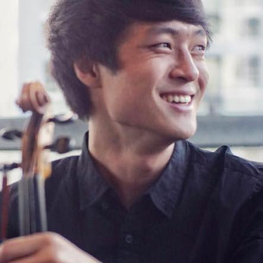

My name is Clarence Mah and I am a computational researcher studying cancer genomics at the School of Medicine at UC San Diego. I graduated UC San Diego with a B.S. in Bioinformatics in 2016. I enjoy playing violin with the local orchestra, traveling, and applying minimalism to my daily life. I currently live in sunny San Diego, California.
I performed DNA motif enrichment analysis in collaboration with postdoctoral researchers using Next Generation Sequencing (NGS) bioinformatics tools. A subset of neuro-degenerative diseases are due to loss of or defective peroxisome function. The goal was to find a potential master regulatory controller of peroxisome genes. I also had the opportunity to research the CRISPR-Cas9 system and design guide RNAs for gene-knockout experiments.
As an undergraduate researcher in the Translational NeuroEngineering Lab, I worked on Brain Machine Interfaces (BMI) under Dr. Vikash Gilja. I assisted in creating a behavioral study to design an experimental framework to study correlations in speech and ECoG data. I also prototyped visual interfaces for those experiments, which were deployed in collaboration with UCSF to study patients in the Neurointensive Care Unit.
An Android application for readers to browse, read, and maintain a personal library of Japanese comics called Manga. As the lead Android developer, I was responsible for designing the user interface and implementing models for interfacing JSON to a local database. I also developed a webpage for app distribution.
This was a course that applied both classic and novel computer science algorithms to molecular sequence analysis. Some of the core genomic algorithsm I learned and implemented include algorithms for sequence alignment, assembly, rearrangement, and variants. Some algorithms include Eulerian paths and cycles, Burrows-Wheeler transform, and soft K-means clustering, all scripted in Python.
I was responsible for creating a research program for undergraduates and engineering project teams by providing resources such as advising, funding, recruitment, and lab space. I successfully generated 15 undergraduate research positions and sponsored 3 student teams to compete in national engineering competitions by recruiting research labs to sponsor undergraduate team projects.
As internal Vice President of the Undergraduate Bioinformatics Club (UBIC) at UC San Deigo, I coordinated a board of 8 officers to plan a wide variety of events, from workshops to panels to industry networking events. I planned with the club's future in mind by creating guides for event planning and establishing relationships with departments and related faculty.
I redesigned and maintain the website for the Biomedical Engineering Society at UC San Diego to facilitate better communication and accessibility for club members and prospective industry sponsors. Some tools used include Gulp, Bootstrap, Less, and jQuery.
I led a team of students to create a video for the National Academy of Engineering's 50th Anniversary Video Contest ot promote innovations in engineering from the past, present, and future. We were the winners of the People's Choice Award for a prize of $5,000.